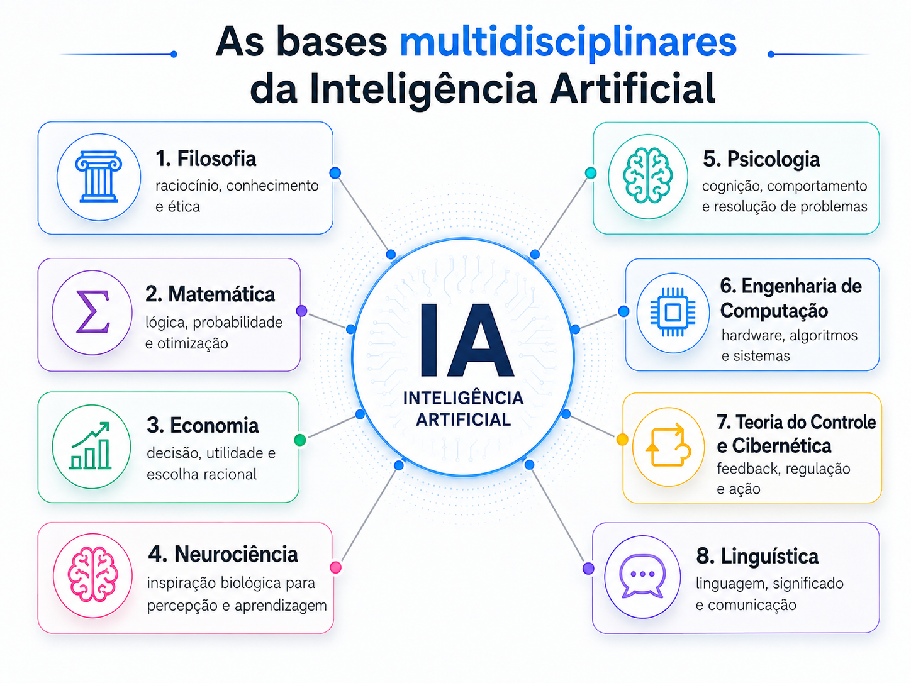
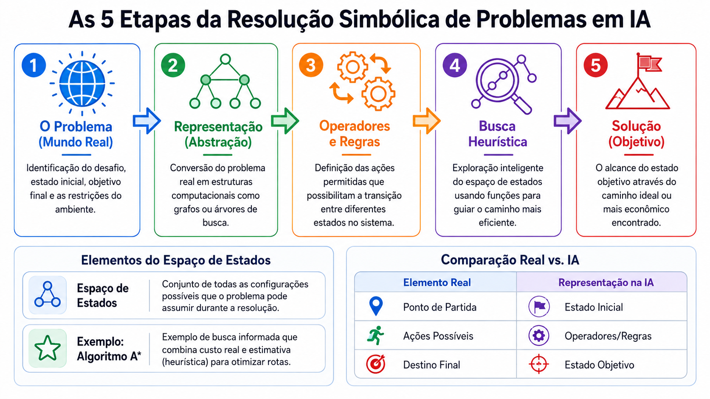
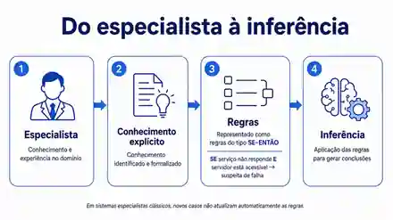
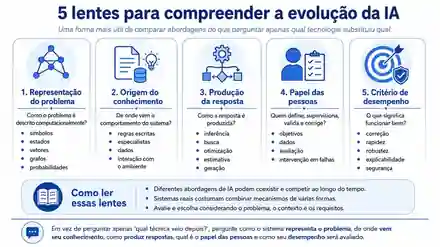
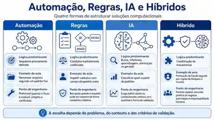
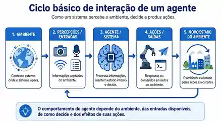

Logic Theorist
Mostrou que a demonstração de teoremas poderia ser tratada como manipulação simbólica orientada por busca.
Aula 02 · material de aprofundamento
Fundamentos, evolução, agentes, formulação de problemas, aplicações contemporâneas e critérios para avaliar quando a IA realmente agrega valor a uma solução de software.
Parte I · Fundamentos e evolução
IA é um campo de investigação e engenharia formado por diferentes tradições. Não existe uma única técnica que, isoladamente, defina toda a área.
Não existe uma única maneira de definir o que torna um sistema “inteligente”. Uma organização clássica do campo parte de duas perguntas: queremos reproduzir capacidades humanas ou alcançar um critério de racionalidade? E estamos interessados nos processos de pensamento ou no comportamento produzido? Da combinação dessas duas dimensões surgem quatro perspectivas: pensar como humanos, agir como humanos, pensar racionalmente e agir racionalmente. Cada uma delas enfatiza problemas diferentes e, por isso, também utiliza critérios diferentes para avaliar um sistema.
Essa diversidade ajuda a entender por que Inteligência Artificial não corresponde a uma técnica específica. Ao longo da história, diferentes problemas foram abordados com representação do conhecimento, lógica, busca, heurísticas, probabilidade, redes neurais, métodos evolucionários e combinações dessas estratégias. Algumas abordagens procuram reproduzir aspectos do comportamento ou do raciocínio humano; outras buscam simplesmente produzir decisões eficazes diante de um objetivo. Aprender com dados é uma possibilidade importante, mas não é uma condição necessária para que um sistema pertença ao campo da IA.
A IA moderna depende de contribuições anteriores da filosofia, lógica, matemática, estatística, psicologia, neurociência, economia, teoria de controle, linguística e computação. O ponto comum é a tentativa de descrever capacidades como raciocínio, decisão, percepção e linguagem de forma suficientemente precisa para que possam ser modeladas.

Com o computador programável, perguntas antigas ganharam um meio técnico concreto. Turing formalizou aspectos fundamentais da computação e, em 1950, propôs deslocar a discussão sobre máquinas inteligentes para o comportamento observável em interação. Em paralelo, McCulloch e Pitts apresentaram um modelo matemático simplificado de neurônio, aproximando operações lógicas de unidades inspiradas no sistema nervoso.
Esses caminhos já mostram duas tradições que atravessariam a história da IA: uma mais orientada a símbolos, regras e procedimentos explícitos e outra interessada em comportamento emergente de unidades conectadas.
O Dartmouth Summer Research Project on Artificial Intelligence é usado como marco institucional porque reuniu pesquisadores em torno de um programa explícito de investigação sobre máquinas inteligentes. A importância do evento não está em ter criado do zero a ideia de máquinas inteligentes, mas em ajudar a consolidar uma comunidade, um vocabulário e um problema científico próprio.
Representar · raciocinar · buscar
Nas primeiras décadas, grande parte da IA trabalhou com representações explícitas do problema, regras de transformação e mecanismos de busca.
Um problema do mundo real precisa ser convertido em uma abstração computacional. Nessa representação definimos estados, estado inicial, objetivo e operadores capazes de transformar um estado em outro. O conjunto de configurações alcançáveis forma um espaço de busca. Quando esse espaço cresce, explorar todas as alternativas pode se tornar inviável; heurísticas ajudam a priorizar caminhos considerados mais promissores.

Mostrou que a demonstração de teoremas poderia ser tratada como manipulação simbólica orientada por busca.
Buscou estratégias mais gerais de resolução de problemas e reforçou a aproximação entre IA e modelos de raciocínio.
Os primeiros sucessos estimularam a expectativa de que mecanismos gerais de busca e raciocínio resolveriam uma grande variedade de tarefas. A dificuldade apareceu quando o número de alternativas começou a crescer rapidamente. Esse fenômeno, conhecido como explosão combinatória, mostrou que inteligência computacional não pode ser reduzida a testar todas as possibilidades.
Uma resposta importante foi incorporar conhecimento específico do domínio: regras, restrições e heurísticas fornecidas por especialistas poderiam reduzir o espaço de alternativas e orientar a resolução.
Nos sistemas especialistas, o conhecimento do domínio é explicitamente representado e separado do mecanismo que o utiliza. Uma arquitetura conceitual típica inclui base de conhecimento, motor de inferência, memória de trabalho e interface. Essa separação permite reutilizar regras e fatos gerais em diferentes consultas, mantendo os dados do caso atual na memória de trabalho.
Considere um sistema de diagnóstico de falhas de software. A base pode conter uma regra como: se o servidor está acessível e o serviço não responde, há indício de falha no serviço. Os fatos do caso entram na memória de trabalho, o motor verifica quais regras são aplicáveis e novas conclusões podem alimentar inferências seguintes.

O sucesso da IA simbólica também evidenciou limitações importantes: a representação sempre simplifica o mundo; adquirir conhecimento de especialistas é difícil; bases extensas de regras tornam-se complexas de manter; espaços de busca podem crescer rapidamente; domínios com muitas exceções geram fragilidade; e incerteza nem sempre pode ser tratada por regras determinísticas.
Também existe o problema do senso comum: especialistas utilizam uma grande quantidade de conhecimento geral e contextual que é difícil de explicitar manualmente. Além disso, novos casos não se convertem automaticamente em conhecimento novo; normalmente precisam ser analisados, formalizados e incorporados à base.
IA simbólica e sistemas especialistas não “fracassaram”. Eles continuam úteis quando regras explícitas, controle e explicabilidade são importantes. A lição é que nenhuma abordagem isolada resolve toda a diversidade de problemas associados à inteligência.
Conhecimento explícito → padrões aprendidos
A história da IA não é uma sequência simples de substituições. Abordagens simbólicas, estatísticas e conexionistas coexistem e frequentemente são combinadas.
Modelos inspirados em redes de unidades simples existem desde as primeiras décadas da IA. Perceptrons foram uma família inicial importante; a partir dos anos 1980, redes multicamadas e métodos de treinamento como backpropagation impulsionaram um novo ciclo de interesse.
A diferença conceitual central está na forma de representar conhecimento. Em muitos sistemas simbólicos, regras e relações são explícitas. Em redes neurais, o conhecimento aprendido fica distribuído pela estrutura e pelos parâmetros do modelo.
Aprendizado de máquina desloca parte da especificação manual para a identificação de regularidades em dados. No aprendizado supervisionado, exemplos com resultados conhecidos são usados para ajustar um modelo que depois será aplicado a novos casos. Isso não elimina decisões humanas: ainda precisamos definir o problema, preparar dados, selecionar representações, escolher métricas e avaliar erros.
Redes profundas ampliaram a capacidade de aprender representações intermediárias diretamente dos dados. Isso foi especialmente relevante em visão computacional, fala, linguagem e outros domínios nos quais características úteis são difíceis de especificar manualmente.
Modelos generativos produzem novas estruturas — texto, imagem, áudio ou código — em vez de apenas escolher uma classe ou estimar um valor. Essa diferença torna a avaliação mais complexa: uma saída pode parecer plausível e ainda estar incorreta, incompleta ou inadequada ao contexto.
Por isso, qualidade precisa ser analisada considerando factualidade, aderência ao objetivo, segurança, utilidade, testes e revisão humana. Sistemas contemporâneos também podem combinar geração com regras, busca, bancos de dados, ferramentas e outros modelos.

Como o problema é representado, de onde vem o conhecimento, como a resposta é produzida, qual é o papel das pessoas e como o desempenho será avaliado?
Parte II · Sistemas inteligentes
Antes de classificar um sistema como inteligente, precisamos observar como o comportamento é especificado e como decisões são produzidas.

Executa um procedimento conhecido e determinístico. Quando entradas e sequência de ações são explícitas, tende a ser a solução mais simples.
Aplicam condições explicitamente codificadas. Regras de negócio comuns não são automaticamente IA; em IA simbólica, regras podem participar de representação e inferência.
É pertinente quando o problema exige busca, inferência, aprendizagem, otimização, tratamento de incerteza ou geração. Aprender não é condição obrigatória.
Combinam modelos, regras, automações e revisão humana, colocando cada mecanismo no ponto em que oferece melhor relação entre desempenho e controle.
Uma solução mais complexa não é automaticamente mais inteligente ou adequada. Em Engenharia de Software, a escolha deve ser justificada pelos requisitos e comparada com alternativas mais simples.
Um agente recebe informações de um ambiente e produz ações capazes de modificar esse ambiente ou influenciar o que ocorrerá em seguida. A ideia se aplica tanto a robôs quanto a sistemas de software, recomendadores, navegadores, jogos e serviços capazes de decidir prioridades.
Em software, percepções podem ser eventos, arquivos, mensagens, chamadas de API, dados de sensores ou entradas do usuário. Ações podem ser classificações, recomendações, comandos, atualizações de banco de dados ou chamadas de ferramentas.

Entre perceber e agir, um agente pode manter estado interno ou conhecimento sobre situações anteriores. Seu comportamento é orientado por algum objetivo, e a decisão consiste em selecionar uma ação considerando percepções, estado, restrições e consequências possíveis. Para avaliar o agente, precisamos ainda de um critério de desempenho.
Um agente racional não precisa ser onisciente ou infalível. A racionalidade é avaliada segundo as informações disponíveis, as ações possíveis e um critério de desempenho. Em Engenharia de Software, isso inclui requisitos funcionais e não funcionais, como latência, custo, disponibilidade, privacidade, auditabilidade, segurança e manutenção.
| Elemento | Pergunta de projeto | Exemplo: triagem de incidentes |
|---|---|---|
| Desempenho | Como saberemos se o agente funciona bem? | Tempo de resposta, encaminhamento correto e redução de retrabalho. |
| Ambiente | Em que contexto o sistema opera? | Fila de incidentes, serviços, usuários, políticas e estado da infraestrutura. |
| Ações | O que o agente pode fazer? | Classificar, priorizar, sugerir responsável, abrir tarefa ou solicitar confirmação. |
| Percepções | Que informações estão disponíveis? | Título, descrição, logs, histórico, métricas e contexto do serviço. |
| Tipo | Ideia central | Exemplo introdutório |
|---|---|---|
| Reativo simples | Responde à condição atual por regras condição–ação. | Controle simples, personagem de jogo, automação local. |
| Baseado em modelo | Mantém representação do estado para lidar com informação incompleta. | Monitoramento, navegação e diagnóstico. |
| Orientado a objetivos | Compara ações considerando estados futuros desejados. | Planejamento de tarefas e rotas. |
| Orientado a utilidade | Compara alternativas por benefícios, preferências ou custos. | Escolha entre rotas, recursos e prioridades. |
| Agente que aprende | Modifica componentes do comportamento a partir de dados, experiência ou feedback. | Recomendação, adaptação e classificação. |
Observabilidade, determinismo, temporalidade, dinâmica e interação com outras pessoas ou agentes alteram profundamente a arquitetura. Ambientes parcialmente observáveis podem exigir estado e inferência; ambientes incertos exigem análise de risco; decisões sequenciais precisam considerar consequências futuras; ambientes dinâmicos podem exigir replanejamento.
Um modelo de linguagem pode ser um componente de um agente, mas o sistema completo inclui objetivo, orquestração, estado, interfaces, permissões, ações disponíveis, monitoramento e critérios de parada. Para Engenharia de Software, é essencial saber quais ferramentas o agente pode chamar, que dados recebe, que permissões possui e como falhas são contidas.
Problema antes da técnica
“Usar IA” não é uma especificação. Antes de escolher biblioteca, modelo ou serviço, precisamos transformar uma necessidade do domínio em uma tarefa computacional verificável.
| Tipo | Pergunta central | Exemplo | Como avaliar |
|---|---|---|---|
| Busca / planejamento | Que sequência de estados ou ações leva ao objetivo? | Rota, agenda, jogo, plano de execução. | Custo, tempo e qualidade da solução. |
| Classificação | A qual categoria pertence esta entrada? | Spam, defeito, fraude, malware. | Taxa de acerto e custo de falsos positivos/negativos. |
| Previsão / regressão | Que valor ou evento é esperado? | Demanda, latência, tempo até falha. | Erro de previsão, calibração e horizonte. |
| Recomendação / ranking | Quais opções são mais relevantes? | Conteúdo, produto, prioridade de chamados. | Relevância, cobertura, diversidade e utilidade. |
| Otimização | Que configuração maximiza benefício ou minimiza custo sob restrições? | Escalonamento, alocação, configuração. | Função objetivo e violações de restrição. |
| Inferência | Que conclusões seguem de fatos, regras ou evidências? | Diagnóstico, consistência, apoio à decisão. | Correção, coerência e cobertura. |
| Geração | Que novo artefato deve ser produzido? | Texto, código, imagem, resumo. | Aderência, testes, segurança e avaliação humana. |
| Controle | Que ação deve ser ajustada conforme o ambiente muda? | Robótica, processo industrial, energia. | Estabilidade, segurança e custo acumulado. |
Tipo de problema não é sinônimo de algoritmo. Classificação descreve uma tarefa; árvore de decisão, regressão logística e redes neurais são algumas formas possíveis de implementá-la.
Uma boa formulação explicita objetivo, entrada, saída, restrições, critério de sucesso, baseline e impacto do erro. A pergunta profissional mais importante é: qual vantagem mensurável a IA oferece em relação a uma regra, uma consulta, um algoritmo determinístico ou uma decisão humana assistida?
| Situação | Caminho provável | Justificativa |
|---|---|---|
| Enviar lembrete antes do vencimento | Automação convencional | Data e ação são explícitas; IA adicionaria complexidade sem benefício claro. |
| Bloquear formulário com campo obrigatório vazio | Regra determinística | O requisito é completo e verificável. |
| Recomendar conteúdo segundo histórico e contexto | Recomendação ou solução híbrida | Existe variação, contexto e necessidade de medir relevância. |
| Prever falha de equipamento por sensores | Classificação / previsão | Depende de dados históricos e do custo dos falsos alarmes. |
| Planejar rotas com restrições | Busca / otimização | Há muitas alternativas e critérios concorrentes. |
| Gerar explicação personalizada | IA generativa com revisão | A geração pode ajudar, mas qualidade e adequação precisam ser verificadas. |
Sinais favoráveis incluem padrões difíceis de expressar manualmente, incerteza, grande número de combinações, regras difíceis de manter e existência de dados ou conhecimento adequados. Sinais de alerta incluem problema mal definido, ausência de baseline, dados inadequados, custo do erro elevado sem mecanismos de contenção e incapacidade de validar o comportamento no contexto de uso.
Tecnologias e marcas mudam rapidamente. Uma análise mais estável pergunta: que problema está sendo resolvido, qual tarefa computacional é executada, qual benefício é esperado, como o sistema é validado e o que acontece quando ele erra.
| Área no ciclo de software | Aplicações possíveis | Pergunta crítica |
|---|---|---|
| Requisitos e análise | Síntese de entrevistas, agrupamento de necessidades, identificação de inconsistências. | Omissão de requisitos, falsa precisão e perda de contexto. |
| Desenvolvimento | Completar ou gerar código, explicar trechos, refatorar. | Código plausível porém incorreto, APIs inexistentes e vulnerabilidades. |
| Testes e qualidade | Gerar casos, priorizar testes, classificar defeitos. | Cobertura aparente sem casos-limite e reprodução do mesmo erro. |
| Operação | Detectar anomalias, agrupar incidentes, resumir logs. | Mudança de distribuição, falso positivo e perda de causalidade. |
| Segurança | Triagem de alertas, fraude, malware, phishing e anomalias. | Adversários adaptativos, dados sensíveis e ataques ao modelo. |
| Produto | Busca semântica, recomendação, atendimento e personalização. | Privacidade, manipulação, viés e conteúdo inadequado. |
IA pode atuar como assistência para uma pessoa, componente de um pipeline, apoio à decisão, mecanismo de ação automática ou agente com ferramentas. Quanto maior a autonomia, maiores as exigências de controle, observabilidade, permissões, rastreabilidade e recuperação.
O rótulo “inteligente” não demonstra vantagem técnica. Um engenheiro deve perguntar qual tarefa é executada, que baseline foi superado, como o sistema foi avaliado, quais limitações são conhecidas e que parte depende de intervenção humana.
Limites, riscos e decisão de engenharia
Sistemas de IA são sistemas de software, mas introduzem fontes adicionais de incerteza. O código pode estar correto e o modelo ainda produzir uma resposta inadequada.
Em sistemas aprendidos, parte dos erros decorre de aproximações produzidas a partir de dados limitados. Por isso, não basta perguntar se existe um bug: precisamos avaliar que distribuição de erros é aceitável e quais erros custam mais.
Uma acurácia global alta pode esconder falhas graves em classes raras ou situações críticas. Detector de fraude, detecção de malware e manutenção preditiva ilustram como falsos positivos e falsos negativos podem ter custos muito diferentes.
Modelos são desenvolvidos com dados de determinados períodos e contextos, mas serão usados no futuro. Usuários, dispositivos, linguagem, processos e adversários mudam. Quando a distribuição de dados muda, o desempenho pode degradar mesmo sem alteração no código.
Sobreajuste ocorre quando o modelo se adapta excessivamente aos dados conhecidos e perde capacidade de generalizar. Separação adequada entre treinamento, validação e teste, prevenção de vazamento de informação e avaliação representativa são partes essenciais da engenharia.
Sistemas probabilísticos e generativos podem responder de forma diferente a entradas semelhantes. Pequenas alterações na formulação, ordem das informações ou contexto podem modificar a saída. Isso exige testar estabilidade e definir quanto de variação é aceitável.
O melhor resultado em benchmark não é necessariamente a melhor solução de produto. Memória, latência, CPU/GPU, energia, custo por requisição, dependência de rede, escalabilidade e manutenção também fazem parte da decisão.
Dados refletem processos de coleta, decisões históricas, erros e cobertura desigual. Qualidade, representatividade, privacidade, impacto sobre grupos, proveniência e custo de infraestrutura precisam ser considerados junto ao desempenho médio.
Nem toda aplicação exige uma explicação em linguagem natural, mas decisões relevantes precisam ser auditáveis. Devemos conseguir identificar versões de dados, modelo, prompt, ferramenta e configuração associadas a um resultado.
A superfície de ataque inclui vulnerabilidades tradicionais e riscos ligados a entradas adversariais, manipulação de dados, dependências de terceiros e instruções maliciosas em sistemas generativos. Quanto maior a autonomia, mais importantes se tornam menor privilégio, validação de entradas e saídas, segregação de credenciais, logs, limites de execução, confirmação humana e rollback.
Síntese final
Ao final da aula, o objetivo é possuir uma estrutura de perguntas que possa ser reutilizada em problemas futuros.
IA aplicada é uma decisão de engenharia. O valor não está em usar a técnica mais recente, mas em formular bem o problema, escolher uma abordagem compatível com os requisitos, medir o que importa e manter controle sobre os riscos.
Checklist de conhecimento
Explicar por que IA é um campo amplo e por que modelos generativos representam apenas uma parte dele.
Distinguir automação, regras, mecanismos de IA e soluções híbridas.
Explicar por que nem toda IA precisa aprender e citar busca, inferência, planejamento e otimização.
Descrever mudanças de foco entre símbolos, conhecimento, dados, redes e geração sem tratá-las como substituição linear.
Identificar ambiente, percepções, estado, objetivo, decisão, ações e critério de desempenho.
Reconhecer busca, classificação, previsão, recomendação, otimização, inferência, geração e controle.
Comparar IA com automação, regras e algoritmos convencionais antes de justificar complexidade adicional.
Considerar dados, custo dos erros, generalização, sobreajuste, explicabilidade, custo, privacidade, segurança e supervisão.
Tratar saídas generativas como hipóteses a serem verificadas, testadas e documentadas.
Referências utilizadas